実験レポート ・ 2026 年 11 月 21 日
回せるドット絵のスキル sprite-stacking で、ゲームの絵を 54 種類作った
X で、AI エージェントに「何でも回る 3D のドット絵にする」スキルが公開されました。上・横・前・後ろの 4 方向の絵から立体を割り出し、薄い板を重ねて描く手法です。このスキルを使って、1 人用のハクスラ『鐘なき王国』の絵を、人物・魔物・建物・床まで全部作りました。下の見本は、その絵をこのページの中で重ねて描いたものです。引きずると回ります。
その場で回す見本
絵を左右に引きずるか、絵を選んで左右の矢印キーを押すと回ります（矢印キーは 22.5 度ずつ）。描いているのは、下の「自分のゲームに入れる」の節に載せたコードそのものです。
結果のまとめ
| 確かめたこと | 結果 |
|---|---|
| ゲームの絵を全部このスキルで作れるか | 作れた。人物 7・魔物 15・NPC 11・物 21 の 54 種類を、姿勢ごとに 127 本のスライスの帯にした。床 8 とスタンプ 13 は平らな絵。作る係の Claude Opus 5.5 が 51 分 40 秒で仕上げた（API 換算 $14.15） |
| スキルの手順どおりで、そのまま使える絵になるか | 小さな人物では、そのままでは足りなかった。4 方向の絵から割り出す仕組みのせいで、歩く足が 1 つの塊になり、体が太る。全体で 17.3%（人物は 26%）の余分な点が付いた。作る係が、元の形と比べて余分を消す処理を自分で足して直した |
| 読者がすぐ試せるか | 試せる。スキルを入れ、Python で 1 行流すと、1.5 秒でスライスの帯・確かめの絵・回せる表示器ができた（下の手順で確かめ済み） |
| 自分のゲームに組み込めるか | 組み込める。描く処理は約 20 行の JavaScript で、このページの見本もそのコードで動いている |
元の報告
2026 年 11 月 20 日、デザイナーの Daniel White さんが、AI エージェント用のスキル sprite-stacking を公開しました（X の投稿）。中身は、説明書（SKILL.md）、Python の切り分けの台本、確かめ用の表示器の 3 つで、MIT ライセンスです。Claude Code、Codex、Cursor などで使えます。
sprite stacking（スライスを重ねる描き方）は、インディーゲームで昔から使われている手法です。スキルが新しく足したのは、4 方向の絵から板を割り出す手順と、AI エージェント向けの進め方だと、作者自身が書いています。
仕組み
- 4 方向の絵: 上・横・前・後ろを、遠近なしで、同じ大きさで 1 列に並べる。
- 削り出し: 4 枚すべてで塗られている所だけを、立体の点として残す（visual hull と呼ばれる方法）。
- 板に切る: 立体を、地面から上へ薄い板に切って、横に並べた 1 枚の絵（スライスの帯）にする。
- 重ねて描く: 板を下から順に、同じ角度で回し、縦に 0.75 倍に縮め、1 枚ごとに 1 ドットずつ持ち上げて描く。どの角度でも、くっきりしたドット絵になる。
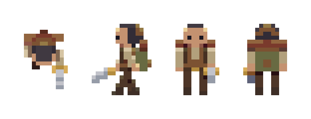
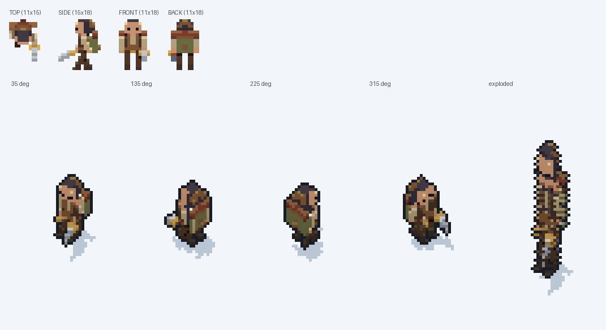
すぐ試せる手順
Windows・Mac・Linux のどれでも試せます。下の 3 の命令と結果は、このレポートを書くときに実際に流して確かめました。
- スキルを入れる
Claude Code なら、次のどちらかです。
このあと AI に「回せるドット絵の樽を作って」「この 4 方向の絵を sprite stacking にして」のように頼むと、スキルの手順で作ります。画像を作る AI が無くても、AI が Python で 4 方向の絵を描きます。# skills の道具で入れる（Node 22.20 以上） npx skills add danielwh2/sprite-stacking # または、リポジトリから写す git clone https://github.com/danielwh2/sprite-stacking cp -r sprite-stacking/skills/sprite-stacking ~/.claude/skills/ - Python の準備
Python 3 に Pillow と NumPy が要ります。
pip install pillow numpyでも入りますが、ほかの環境を変えたくないときは uv の使い捨ての環境で動かせます（下の命令のuv run …）。 - 見本の 4 方向の絵で、切り分けを試す
見本の絵 bone_soldier_views.png（骨の兵、2 KB）を保存して、次を流します。
--slicesは横の絵の高さ（この見本は 18 ドット）、--top-nose downは乗り物以外に付けます。
約 1.5 秒で、uv run --no-project --with pillow --with numpy python sprite-stacking/skills/sprite-stacking/scripts/views_to_slices.py \ bone_soldier_views.png slices.png --slices 18 --top-nose down --preview check.png --html viewer.htmlslices.png（スライスの帯、18 枚 × 11×10 ドット）、check.png（確かめの絵）、viewer.html（ブラウザで開くと回せる表示器）ができます。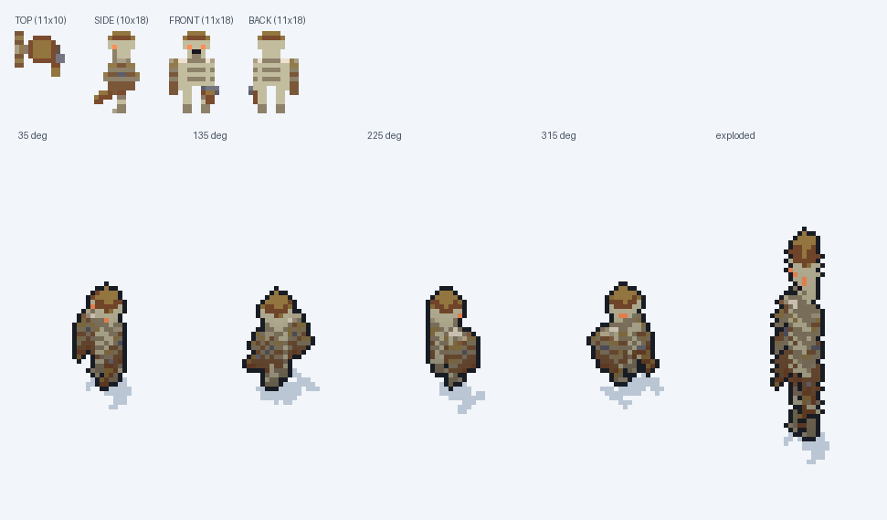
上の命令で出た check.png。骨の兵が立体になっているが、やや太く、色が混ざっている（理由は次の節）。 - 自分のゲームに入れる
スライスの帯を Canvas に重ねて描く処理は、次の約 20 行です。このページの見本も、このファイル（demo/stack.js）をそのまま読み込んで動いています。
使い方: 絵の解像度の小さな canvas に（JavaScript を読み込むと、ここに demo/stack.js の中身が出ます）drawStack()で描き、withOutline()で輪郭を 1 回だけ付けてから、整数倍に拡大して画面に描きます（拡大の前後ともimageSmoothingEnabled = false）。人物の向きはturn = atan2(vy, vx) − π/2。動かない木や建物は、読み込みのときに向きごとに 1 枚の絵へ焼き付けておくと、1 コマあたりの描画の数が増えません（200 本の木 × 30 枚 = 6,000 回を毎コマ描かずに済む）。

スキルが作る表示器の見本: 冒険者の待機の姿勢（skill-viewer-adventurer.html）。ターンテーブル、板の順番の表示、ばらした表示、16 方向の PNG の書き出しができます。このファイルはスキルの表示器のひな形から作ったもので、MIT ライセンス（© 2026 Daniel White）です。
作ったもの
| 種類 | 数 | 姿勢 | 板の枚数 |
|---|---|---|---|
| 職業 | 7 | 待機・歩き 2 つ・攻撃・呪文（35 本） | 19〜27 |
| 魔物 | 15 | 待機・歩き 2 つ・攻撃（60 本） | 7〜26、ボスは 46 |
| NPC | 11 | 待機（11 本） | 18〜23 |
| 物（家・木・岩・鐘楼など） | 21 | 1 つ（21 本） | 4〜63 |
| 床・スタンプ | 8・13 | 平らな 16×16 | － |
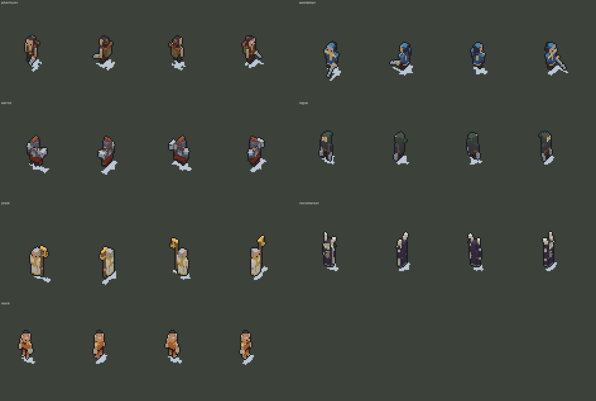
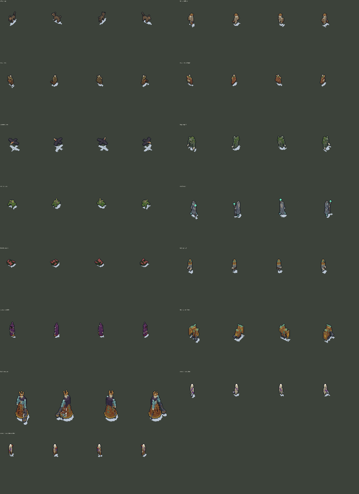
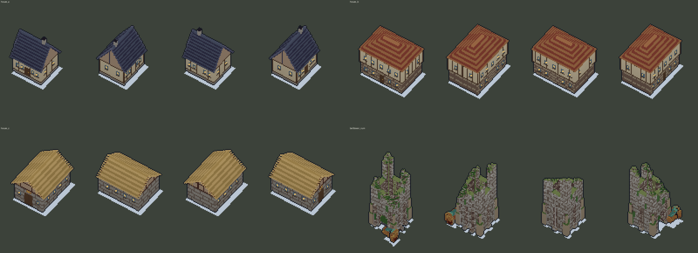
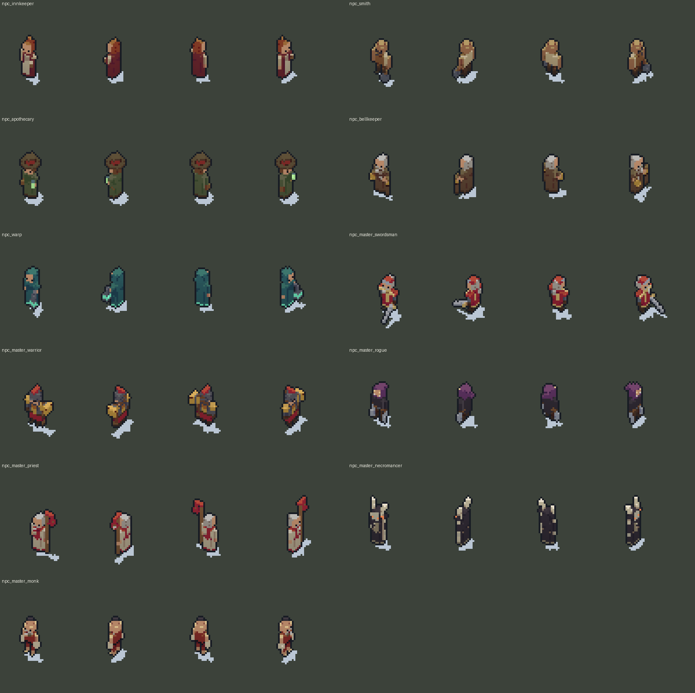
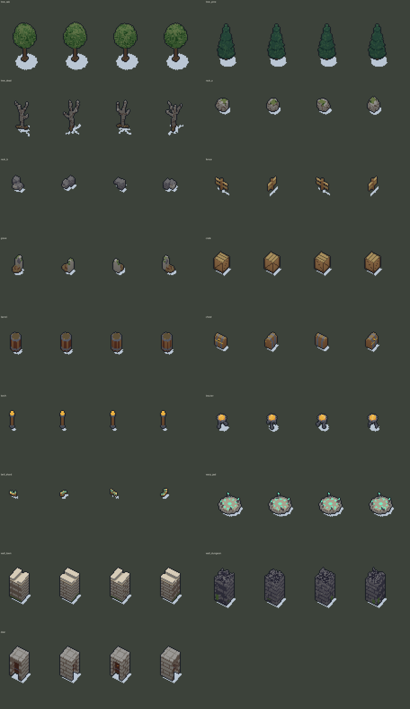
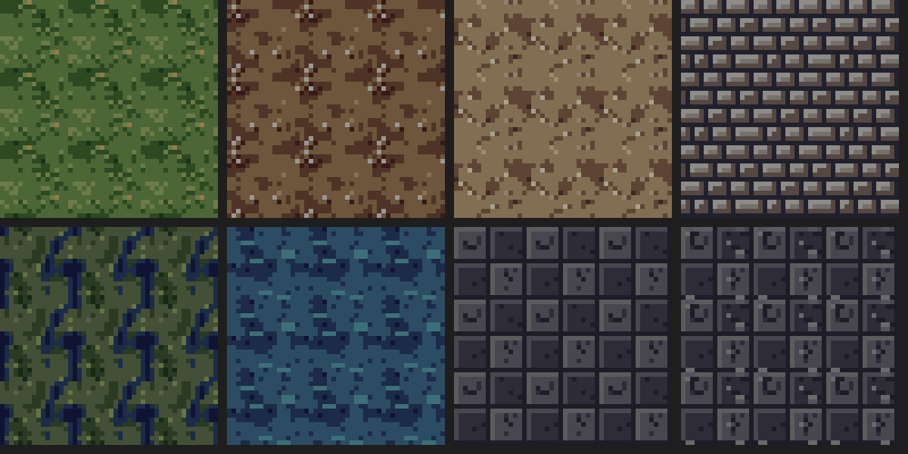
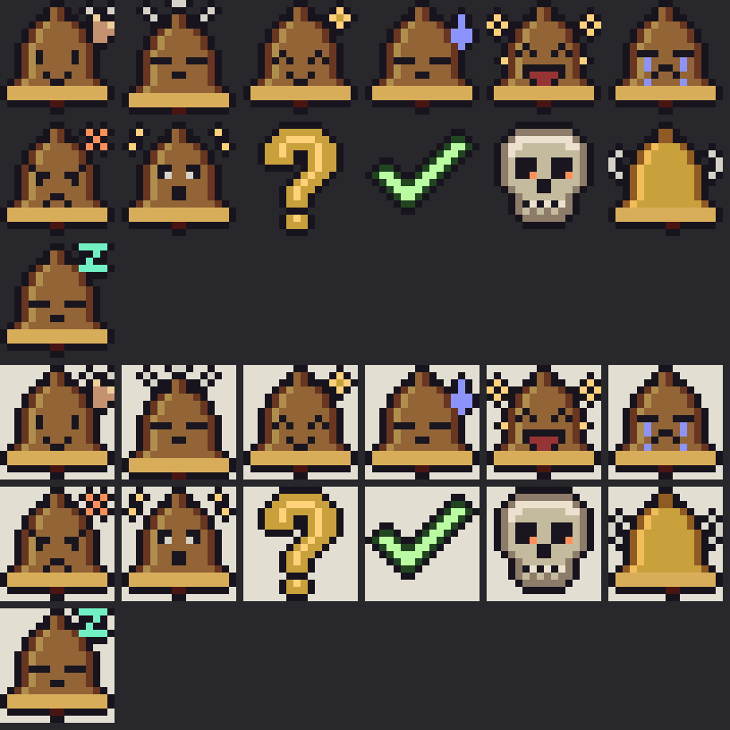
スキルの癖と、直し方
作る係は、スキルの説明書の手順どおりに進め、切り分けるたびに確かめの絵を見ました。そこで当たった問題を、多かった順に並べます。
1. 歩く足が 1 つの塊になり、体が太る
4 方向の絵から割り出す方法は、「4 枚すべてで塗られている所」を残します。横から見て足が前後に開いていても、前から見ると 2 本の足は重なって見えるので、その間も「塗られている」と判断されます。その結果、開いた足の間が埋まり、体の横も膨らみます。歩き 1 と歩き 2 は、97% 同じ形になりました。全部の絵で数えると、元の形より 17.3%（人物は 26%）多い点が付いていました。
作る係は、4 方向の絵を描く元になった小さな立体の模型（Python で箱と楕円体を組み合わせた物）と、切り分けた結果を比べ、模型に無い点を消す処理を足しました。消したあとに見えるようになった面は、模型の材質の色で塗り直します。
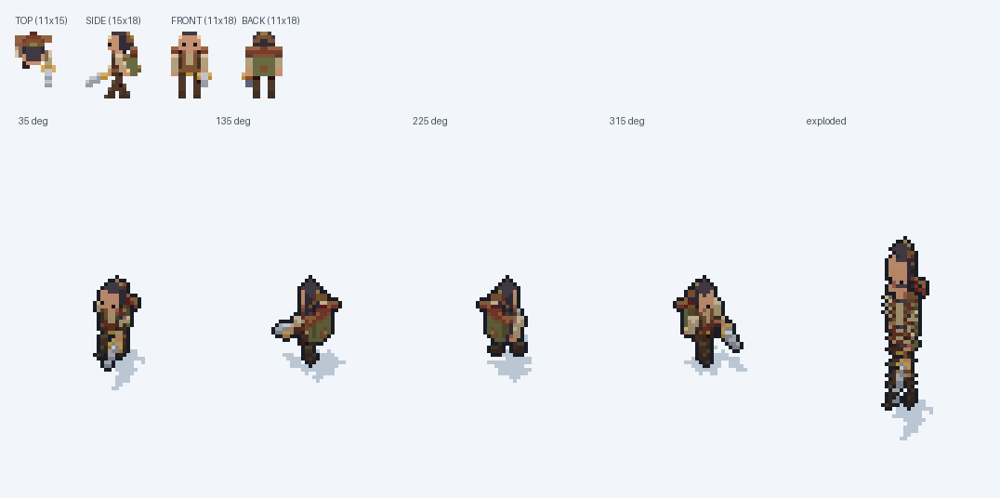
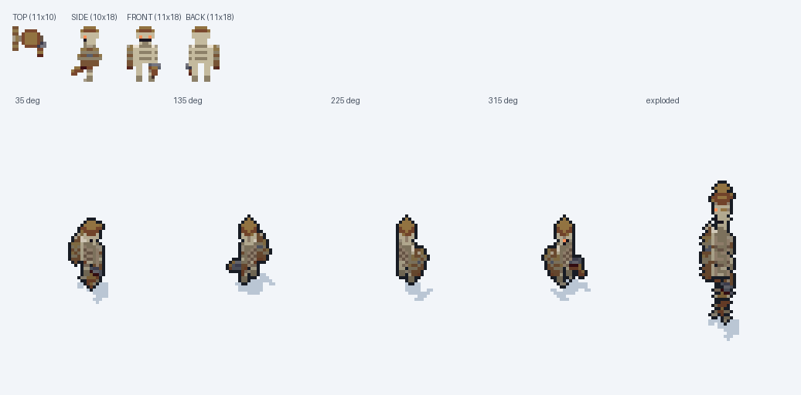
つまり、きれいな結果を得るには、4 方向の絵の元になる立体の模型が手元に要りました。模型があれば、それを直接板に切ることもできます。今回、スキルがいちばん役に立ったのは、4 方向からの削り出しそのものより、確かめの絵（1 枚で 4 方向・4 角度・ばらした姿が見える）と、描くときの数字（縮み 0.75、1 ドットずつ持ち上げる、輪郭は最後に 1 回）と、失敗例の表（Lessons）でした。
2. 説明書の「輪郭を付ける」が、小さな人物に合わない
説明書は、4 方向の絵に 1 ドットの暗い輪郭を付けるよう書いています。幅 10 ドットほどの人物でこれをすると、輪郭が立体の殻になり、足の間や腕と胴の間の 1〜2 ドットの隙間が暗い点で埋まりました。冒険者の 5 つの姿勢で、余分な点は 951 から 4,920 に増えました。作る係は 1 回試してやめ、輪郭は描くときに 1 回だけ付けることにしました。
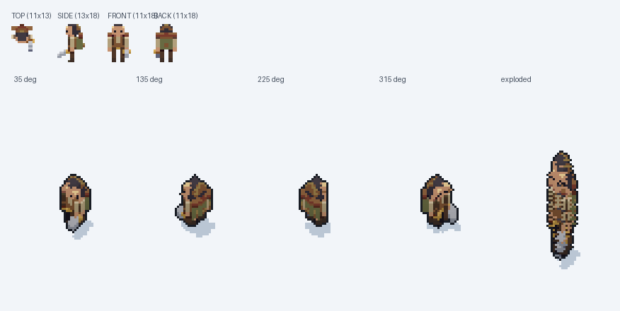
3. 片側の色が、反対側にも付く
横の絵は 1 枚（左向き）だけなので、片手に持った盾や杖の色が、反対側の面にも付きます。ネクロマンサーでは、頭の骨の飾りの色が衣の中に斑点として出ました。作る係は、点の材質に合わない色を、材質の中間の色に置き換えて直しました。
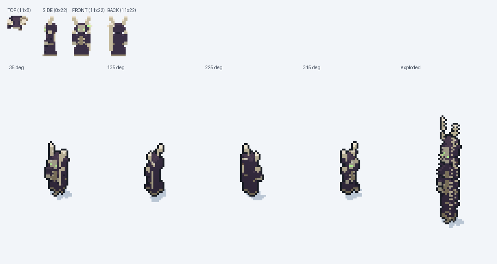
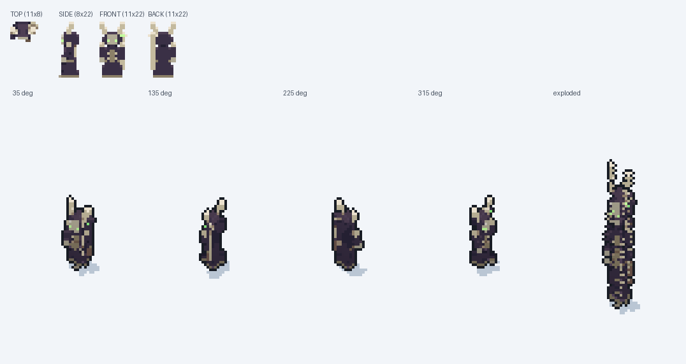
4. 離れた部品が、知らせなしに消える
盗賊の攻撃の姿勢で、手から 1 ドット離して描いた短剣が消えました。台本は離れた小さな塊を「ごみ」として捨てますが、そのことを知らせません。さらに 4 方向の大きさが合わなくなり、形がずれました。短剣を手につないで直し、作る係の組み立ての台本に「離れた部品があれば知らせる」確かめを足しました。
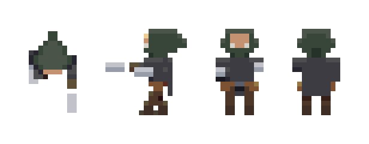
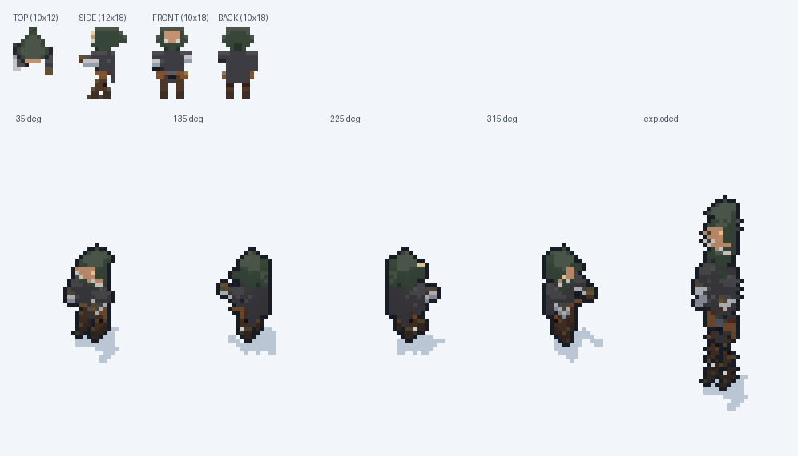
5. どこからも見えない空洞が埋まる
扉の奥や、崩れた鐘楼の中の空洞は、4 方向のどの絵にも映らないので、中身の詰まった塊になります（扉は 56% 余分）。説明書の失敗例の表にも「切ったあとで手で直す」とあります。模型と比べる処理で直しました。崩れた鐘楼は、窓が埋まる、細い突起が出るなどで 5 回描き直しました。
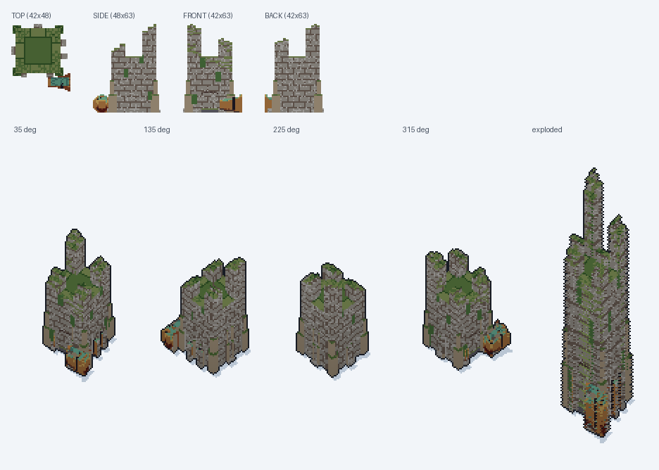
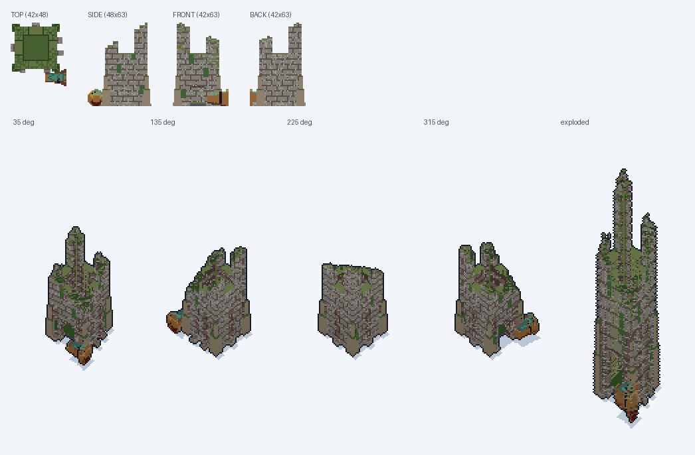
6. そのほか
- 4 ドットより薄い物は 4 ドットに広げられる: 台本が最小の厚みを 4 にしているため、厚み 2 ドットで描いた柵が 4 ドットになり、大きさが合わなくなりました。柵の柱を 4 ドットにして直しました。
- 説明書の決まりが効いた所: 煙突を屋根の稜線に立てる、壁から出る物は平らに描く、隙間を外までつなげる、の 3 つを守った家は、余分な点が 0〜3% でした。細い部分を見つける確かめ（thin_runs）は、1 ドットの突起を 2 回見つけました。丸い物の
--roundで、木の幹・樽・ワープの台が丸く切れました。 - スキルの外の失敗: 床の模様を正弦波の足し合わせで作ったら、斜めの縞が出ました（下の左）。周期のあるノイズに替えて直しました（上の「作ったもの」の床）。
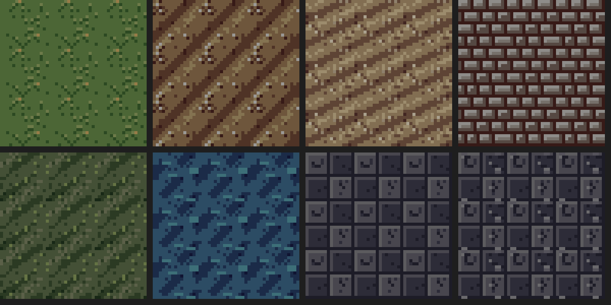
作る係は、説明書の失敗例の表（Lessons）に 5 行を足すことを勧めています。離れた部品が知らせなしに消える、4 ドット未満が広げられる、輪郭が小さな人物の隙間を埋める、4 方向の削り出しは歩く足を表せない、横の絵 1 枚で両側に色が付く、の 5 つです。
時間と費用
| 項目 | 値 |
|---|---|
| 作る係 | Claude Opus 5.5（Claude Code のサブエージェント） |
| 時間 | 51 分 40 秒 |
| AI の呼び出し | 118 回 |
| 出力のトークン | 237,672 |
| 費用（API 換算） | $14.15 |
| 全部の絵を作り直す時間 | 約 4 分（台本を流すだけ） |
費用は 2026 年 11 月の料金表（Opus 5.5: 入力 $4、5 分のキャッシュの書き込み $5、キャッシュの読み込み $0.20、出力 $20、いずれも 100 万トークンあたり）で計算しました。読み込んだ文脈の大半はキャッシュの読み込み（約 3,441 万トークン）です。
分かったこと
- このスキルで、ゲームの絵を一通り（54 種類・127 姿勢）作れました。描き方の数字と確かめの絵が決まっているので、AI が描いた絵の良し悪しを、人が 1 枚の絵で判断できます。
- ただし、4 方向の絵から削り出す方法には限界があります。幅 10 ドットほどの人物では、歩く足が塊になり、体が太ります。きれいにするには、元になる立体の模型と比べて直す処理が要りました。
- 建物・木・樽のような、4 方向から見て形が分かる物は、説明書の決まりを守ればほぼそのまま使えました。
- 描く処理は約 20 行で、どんな Canvas のゲームにも入れられます。動かない物は向きごとに焼き付けておくと軽くなります。
ソースコード
- demo/stack.js: 重ねて描く処理（このページの見本と同じ）。demo/demo.js が見本の操作。
- src/（GitHub）: 作る係が書いた絵の台本（Python 10 本、3,112 行）。
vox.pyとshapes.pyが立体の模型、classes.py・monsters.py・npcs.py・props.py・tiles.pyが各絵、build.pyが 4 方向の絵を描いてスキルの台本で切り分け、模型と比べて直す。台本の中の手元のフォルダの場所は、自分の環境に合わせて書き換えてください。 - 『鐘なき王国』: この絵を使う 1 人用のハクスラです。ブラウザでそのまま遊べます。コードは kanenaki/（GitHub）、絵の台本はその中の
art/です。